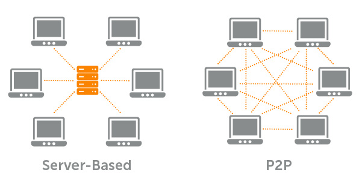

If you have heard of "Bitcoin" or any of the other cryptocurrencies, then you have probably heard the word blockchain or the term “blockchain technology”. But what is a blockchain? Does it have other uses? How does it work?
Blockchain technology is commonly associated with Bitcoin and other cryptocurrencies, but that’s only the tip of the iceberg.
Blockchain isn’t just for Bitcoin. A blockchain is a big long list of records that is publicly available for anyone to browse, verify and, to add . These records, known as blocks, hold details of transactions and the blockchain grows when new blocks are added to it. The reason why are they called a blockchain is because, it is a series of blocks of data and inside those blocks are transaction which are chained together and it’s chaining them together give the strength of blockchain. To make sure that the blockchain is valid, each block has a special and unique number, called a hash and the next block in the chain has the hash of the previous block embedded into it. This means that one block is linked to another thus forms the chain
A hash is basically a way of reducing a large amount of data into a more manageable chunk for reference, sorting, and comparison. Hashes come in two types, unique hashes and non-unique hashes. Now the unique hash, Whatever the data you give the hashing function that is photo, video, transactions, or anything at all is generated as a unique hash. So now you take a hash of a large file of data and another hash of a large data, if you want to compare both the file you don’t need to compare each and every byte of a file to compare you just need to compare the hash of the both files. If they are same they are the same file
The key about hash is that they have to produce unique hash each time. Even if the single byte of the data is changed the produced hash is unique every time
Example
c9cc598b6b219bbec06aa74844440c412c07a87500d8ff60032e5aec0cdd4546
06fc4480e3aed2c31df02900fd5bd3aea41676bb42f051aad5e3515842393a05
If you look at the strings of both the data, its similar except the character “c” in “comics” is diffrent which as produced a different hash which is unique.
Now the SHA-256 is a type of hash which is secure in the hash family and the SHA-256 belongs to the SHA-2 series. Before that SHA-1 was used which is less secure than others. The length of the hash is always same for the SHA-256 hash, whatever the file, no matter the file size. The produced length of the hash is same.
The way a blockchain maintains its integrity is that a unique hash is generated for each block. That hash is then embedded in the next block. This means the hash for block 1 is part of the data used to generate the hash for block 2, the hash for block 2 is part of the data used to generate the hash for block 3, and so on. If block 1 is changed then its hash will change which will also mean that the hash for block 2 will change. This causes a chain reaction and every block becomes invalid.
The hashes can be calculated very easily On a single core Raspberry Pi Zero, it takes less than 0.02 seconds. Even a small computer can calculate thousands of hashes in 1 second. This means it wouldn’t be very hard to recalculate all the hashes in a blockchain in just a few seconds, even if the blockchain was tens of thousands of blocks in length. But the hash needs to be very hard to calculate. To do that the hashes in a blockchain need to be special. The simplest way to make them special is to insist that the hashes start in a certain way, for example with some leading zeros. But the hash generated for any fixed piece of data is always the same. Even if you run that same piece of data over a billion time it’s the same hash which is produced. To generate a hash with leading zeroes we have to change the data using Nonce. A nonce is a small counter that is altered on each iteration in an attempt to generate a hash with leading zeros.
If you add nonce 49010 in a data it would create a hash with four leading zeros. But even with four leading zeros raspberry pi can calculate the hash in seconds. Calculating a hash with just six leading zeros using Raspberry Pi Zero takes 9 minutes and 38 seconds. The bitcoin hash contains 17 leading zeros, which takes a very long time to calculate the hash.
The database is located on a server somewhere and clients connect to the server to get the data out of the Database. But in this system Storing a blockchain on a centralized server is problematic. There is a chance of shutdown of this servers so they are decentralized which means they are distributed. And another main thing about this blockchain is every participants must use Public Key Cryptography. If you lose your private key then you lose everything, Like every thing you own is gone. There is no recovering the key.
I hope I covered everything about the Blockchain and How it works? How the Hash is created? And the distribution of blocks and Private key Cryptography